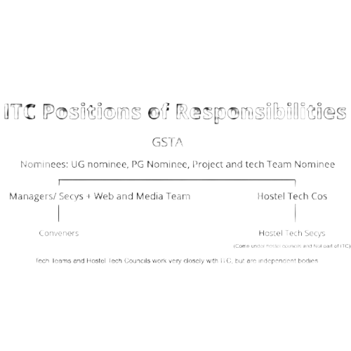

The Institute Technical Council caters to the needs for everything related to tech happening in the institute. Student Tech is one of the pillars of IIT Bombay, which fosters a culture of motivating young minds to pursue innovative ideas. We make sure that your ideas are heard and help you turn these ideas into reality in every way possible.
There is no formal way to join a club. You can go and participate in activities and events of any club. You will receive information about these via webmail. These activities are organized by the managers and conveners of respective clubs. In order to become a part of the council, you can take part in the recruitments that happen every year. To join the technical teams, you can participate in the respective teams' year around recruitments. More information will again be shared via webmail.
